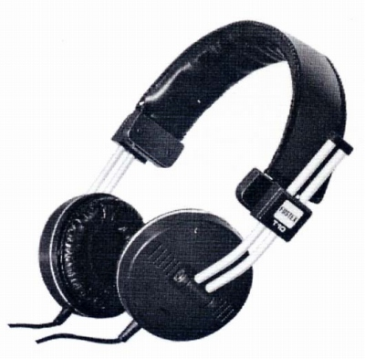

T10

■価格 6,000円■型式 オープンエアタイプＲＰ方式■振動板 平面コイル振動板 ■インピーダンス 50Ω■再生周波数帯域 20-25,000Hz■許容入力 200mW■感度 91ｄB/1mW■コード 2.8m PVC■重量 270g（コード含まず）■発売 1977年頃■販売終了 1995年頃■備考 価格は1977年頃のもの 1982〜83年頃は6,500円 一時市販が中断された可能性あり
フォステクスのインデックスへ